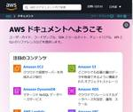

TechHarmony
https://blog.usize-tech.com
TechHarmonyは、SCSK株式会社が運営するエンジニアブログです。SCSKのエンジニア自らがクラウドを中心としたナレッジを積極的にアウトプットすることで社会への還元を行うとともに、更なるスキルアップを目指します。
フィード
【Catoクラウド】管理者向け Catoの通知まとめ記事
TechHarmony
本記事は TechHarmony Advent Calendar 2024 12/8付の記事です。 Catoクラウドの管理者の皆様には、日々様々な通知が届いていませんか？ 今回はCatoクラウドの通知機能についてまとめて […]
15時間前
【Catoクラウド】2024年のCatoに関するアップデート情報総まとめ
TechHarmony
本記事は TechHarmony Advent Calendar 2024 12/7付の記事です。 こんにちは、Catoクラウド担当SEの中川です。 本記事では、年末ということで、2024年のCatoに関する、価格改定な […]
2日前
【Catoクラウド】新オプション! Digital Experience Monitoring はここがすごい!
TechHarmony
本記事は TechHarmony Advent Calendar 2024 12/6付の記事です。 本記事では、2024年11月3日にリリースされた、Catoクラウドの新しいオプションである「Digital Experi […]
3日前
CatoクラウドのCMAがリニューアルされます！
TechHarmony
この度、4年ぶり位にCato Management Application（CMA）がリニューアルされます！ リニューアルと言うと大袈裟かもしれませんが、メニュー構成の変更により特定のサービスやコンテンツの配置が変わって […]
4日前
【re:Invent 2024発表】次世代 Amazon SageMaker Unified Studio に触ってみた
TechHarmony
どうも。みなさん re:Invent 2024 楽しんでますか? 寺内は東京にいます。 とはいえ、AWSからの大量のNews情報はキャッチできますので、見ていると興味深いキーワードが。 the next generati […]
4日前
クラウドにおけるデータセキュリティ強化の鍵！DSPMとは何か、導入のメリットと具体的な活用法を解説
TechHarmony
みなさんこんにちは。 クラウド環境の利用が拡大する中で、最も重要な課題の一つがデータセキュリティです。クラウドには膨大なデータが保存されていますが、その中には機密情報や規制対象データが含まれていることも少なくありません。 […]
5日前
クラウド権限管理の強化を目指すCIEMとは？導入のメリットと具体的なポイントを解説
TechHarmony
クラウドの普及が進む中、セキュリティ対策の重要性が高まっています。その中でも特に課題として挙げられるのが、クラウド環境における権限管理の複雑化です。多くの企業で、権限の設定ミスや適切でないアクセス許可が原因でセキュリティ […]
5日前
クラウド上のワークロードを守るCWPPとは？基本的な機能と導入メリットを解説
TechHarmony
クラウド環境が普及する中で、アプリケーションやコンテナ、仮想マシンなどのワークロードをどのように保護するかが重要な課題となっています。こうした課題を解決するために注目されているのが、CWPP（Cloud Workload […]
5日前
クラウドのセキュリティ対策を強化するCSPMとは？導入のポイントを解説
TechHarmony
みなさんこんにちは。 近年、クラウドサービスを利用する企業が急増しています。その一方で、クラウド環境におけるセキュリティ対策が課題となるケースも増えています。そこで注目されているのがCSPM（Cloud Security […]
5日前
新米エンジニアが挑む！Snowflake CortexAIでドキュメント検索アシスタントを構築してみる
TechHarmony
本記事は 新人ブログマラソン2024 の記事です。 皆さんこんにちは！入社して間もない新米エンジニアの佐々木です。 最近、実務でAWSやSnowflakeを用いたデータ活用基盤の構築に携わっており、日々新しい技術に触れる […]
5日前

LangGraphとVertex AI Geminiを使って、AI Agentのreflectionを試してみる
TechHarmony
本記事は TechHarmony Advent Calendar 2024 12/4付の記事です。 こんにちは！SCSKの江木です。 現在AI業界でAI Agentがかなり流行っていますが、皆さんご存知でしょうか？端的に […]
5日前

AWSの情報の調べ方
TechHarmony
本記事は TechHarmony Advent Calendar 2024 12/3付の記事です。 はじめに AWSを利用していると、いろいろと知りたいことが出てきます。こんなことができないの？ こういうときはどうするの […]
6日前
【CWPP】Prisma Cloud Container Defenderのアーキテクチャ
TechHarmony
本記事は TechHarmony Advent Calendar 2024 12/2付の記事です。 みなさんこんにちは。 本ブログでは、Prisma Cloudを用いたサービス開発や運営の中で得た知見や、使いこなし方を共 […]
7日前
Amazon ECS でソフトウェアバージョンの一貫性を自由に設定できるようになりました[Amazon ECS + AWS CloudFormation]
TechHarmony
本記事は TechHarmony Advent Calendar 2024 12/1付の記事です。 こんにちは。SCSKのふくちーぬです。本記事がアップされる頃には、成田空港を出発して、ラスベガスに向かっていることでしょ […]
8日前

「Amazon CodeCatalyst × TaskCat × Amazon Q」で AWS CloudFormation テンプレートの快適な開発環境を作る
TechHarmony
こんにちは。ひるたんぬです。 最近は気温差が激しく、体調を崩しやすいですね。。私もこのビッグウェーブにしっかりと乗り、体調を崩しておりました。 そんなあるとき、ふと気になることがありました。 「なぜ、ティッシュは必ず二枚 […]
9日前
【緊急】Zabbix の脆弱性情報 CVE-2024-42327 (CVSS 9.9)
TechHarmony
こんにちは。SCSK株式会社の上田です。 Zabbixに関する、深刻な脆弱性が発表されました。 この脆弱性は、Zabbixのバージョン6.0.31、6.4.16、および7.0.0までのバージョンに影響します。 Zabbi […]
9日前
【Catoクラウド】AzureのvSocketが2ポート対応した件
TechHarmony
こんにちは。SCSKの中山です。 10月にAzureのvSocketが2ポート対応したので、今回は実際に2NIC VMを作成しつつ、既にAzureでvSocketを利用している方向けに移行する際のポイントを […]
9日前
【CSPM】Prisma CloudのApplication Security機能でAWS CodeCommitに接続してみた
TechHarmony
はじめに Prisma Cloudのアプリケーションセキュリティ機能でAWS CodeCommit上のコードを接続する手順を解説します。 Application Securityとは Application Securi […]
10日前
AWS Control Tower のリージョン拒否でアカウントを統制する
TechHarmony
本記事ではAWS Control Towerのリージョン拒否設定について解説します。 AWS Control Towerの概要 AWS Control Towerは、AWSにおけるマルチアカウント環境を簡単にセットアップ […]
12日前
TerraformによるGoogle Cloud環境構築
TechHarmony
本記事では、Infrastructure as Code（IaC）ツールのTerraformを使ってGoogle Cloud環境を構築する手順を、セットアップ方法から解説します。 Google Cloudには公式のIaC […]
16日前
【Catoクラウド】YouTubeに関するトラブルシューティング
TechHarmony
こんにちは、Catoクラウド担当SEの中川です。 Catoクラウドを利用しているとYouTubeが見られない、またはYouTubeへのアクセスをCatoで制御する方法を教えてほしい、といったお問い合わせをいただくことが多 […]
17日前
【Catoクラウド】目的別機能索引で簡単解決！
TechHarmony
Catoクラウドには様々機能がありこのような悩みを持たれるケースも少なくはないのではないでしょうか？ 目的は明確にあるのに、どの機能をつかったらよいかわからない Knowledge Baseで調べたいけど、検索キーワード […]
17日前
TerraformでAzureにリソースを構築
TechHarmony
今回は昨今注目を集めているインフラストラクチャをコードで構築する、Infrastructure as Code(IaC)についてです。 IaCの中でもマルチクラウドに対応しているTerraformについて紹介したいと思い […]
18日前
WordPressコンテンツ共有にAmazon FSx for OpenZFSを利用する
TechHarmony
こんにちは、SCSK木澤です。 一昨年、WordPress等Webシステムのコンテンツ共有にAmazon EFSを用いることについての課題等をまとめました。 WordPressサイトのWebコンテンツ共有にAmazon […]
21日前
【SCSK】Zabbix Conference Japan 2024 出展のお知らせ
TechHarmony
こんにちは、SCSK株式会社の中野です。 今年もZabbix Japanが主催するZabbix Conference Japan 2024が開催されます。 弊社も講演時間をいただき、本会場にて発表させていただきます。 本 […]
24日前
コンテナを理解して触ってみた！
TechHarmony
こんにちは、2024年度入社の秋葉です！ クラウドやアプリ開発の現場でよく聞く「コンテナ技術」。 「結局何なの？」と疑問を持っている方も多いのではないでしょうか？コンテナは、アプリを軽く素早く動かせる仮想化技術で、開発・ […]
1ヶ月前
Amazon EC2 Image Builder を使い倒す
TechHarmony
初めまして。 SCSKの多田といいます。 今まではAWSでサーバレス環境の構築等を行うことが多かったのですが、今期よりEC2を使ったサービスを提供している部署に異動となり、最初の仕事としてEC2の運用周りを見直す機会に携 […]
1ヶ月前
アプリケーション開発で使用した Spring Boot の紹介
TechHarmony
こんにちは、2024年度入社の齋藤です。 現在私は、フルスタック人材の育成を目的とした新人研修に取り組んでいます。Webアプリケーションの開発からAWSを用いたインフラ構築まで幅広い知識を習得できるため、非常に充実した研 […]
1ヶ月前
【GCP】Cloud Pub/SubをトリガーにしたDataFusionリアルタイムパイプラインを作成する
TechHarmony
GCPのCloud Data Fusionはデータパイプラインを作成、管理できるサービスです。Data FusionとCloud Pub/Subを組み合わせることで、日々発生するデータをリアルタイムにDWHへ格納すること […]
1ヶ月前
AWS CloudFormation と Ansible を使ってみた
TechHarmony
こんにちは。2024新人の加藤です。 今回はAWS上のCloudFormationと構成管理ツールのAnsibleを使用し、その便利さに感銘を受けたため、具体的に何を行って、どのような部分に感銘を受けたかご紹介したいと思 […]
1ヶ月前
EC2停止→バックアップ→EC2起動のプロセスをノーコードで自動化してみた
TechHarmony
どうもSCSK齋藤です。 EC2のバックアップを取得する際に、アプリケーション整合性の観点から、EC2を停止してからバックアップを取得するユースケースは発生すると考えられます。 Lambdaなどを使って、それらの手順を自 […]
1ヶ月前
フルマネージド？サーバレス？？その違いは一体…
TechHarmony
こんにちは、ひるたんぬです。 10月も中頃を過ぎ、（個人的には）過ごしやすい季節となってきました。もう秋…ですかね？ ところで、、なぜ「〇〇の秋」という言葉だけ数多く存在するのでしょうか？ 「〇〇の春」「〇〇の夏」「〇〇 […]
1ヶ月前
Zabbix Proxy のHA構成(可用性)について考えてみる
TechHarmony
こんにちは、SCSK株式会社の小寺崇仁です。 Zabbix7.0からZabbixプロキシの冗長構成が可能になりました。 制約事項等ありますので、検証しながら考察したいと思います。 プロキシの冗長構成について サーバ＋プロ […]
1ヶ月前
一瞬で記録するWinShotでの作業証跡
TechHarmony
こんにちは、2024年度入社の冨岡です。 どうやら私は12月まで研修を受けさせていただけるようです。弊社の教育の手厚さを日々感じながら研修に取り組んでおります。 現在はクラウド（AWS）研修に取り組んでいる中で作業証跡と […]
1ヶ月前
【ServiceNow】Automated Test Framework（ATF）でテストを自動化する
TechHarmony
こんにちは。 最近、ServiceNowのAutomated Test Framework（ATF）を使用する機会があったので、その際に学んだことのご紹介となります。 本記事は執筆時点（2024年10月）の情報です。最新 […]
1ヶ月前
第10回 DRBD × LifeKeeperの高可用性リアルタイムレプリケーションを探る
TechHarmony
こんにちは、SCSKの茂木です。 前回は「HULFT× LifeKeeper」についてご紹介しました。 第9回 HULFT × LifeKeeperでミドルウェアの高可用性を実現！ミドルウェアの高可用性ニーズの高まりと、 […]
1ヶ月前
AWS IaC ジェネレータを使ってみた
TechHarmony
既存のAWSリソースを基にCloudFormationテンプレートを生成する「IaCジェネレータ」が2024年2月にリリースされました。 このツールによって、既存のリソース情報を簡単にコード化できるようになっています。 […]
1ヶ月前
ZabbixとCloudWatch、どっちを使えばいいの？ 監視ツール選定のポイントまとめ
TechHarmony
こんにちは。SCSKの上田です。 システム監視の重要度が高まってきた昨今、様々な監視ツールが存在しています。 今回は、オープンソースのシステム監視ツール「Zabbix」と、AWSの「Amazon CloudWatch（以 […]
1ヶ月前
Zabbixの定期レポートの設定方法
TechHarmony
こんにちは、SCSK株式会社の小寺崇仁です。 Zabbixには定期レポート機能があります。今回は定期レポートの設定方法を紹介いたします。 定期レポートとは Zabbix5.4にて実装された、定期的にダッシュボードのスクリ […]
1ヶ月前
【11/6開催】「Prisma Cloud」運用課題解決セミナー開催のお知らせ
TechHarmony
こんにちは。SCSK株式会社の南です。 11/6に、【「Prisma Cloud」運用課題を解決、成功事例に学ぶ「CSPM」運用改善アプローチ ～未解決アラートへの対策など具体的な解決策を紹介～】と題したPrismaCl […]
1ヶ月前
今やるべきクラウドセキュリティ対策とは？
TechHarmony
昨今のビジネス環境では、コスト削減やスケーラビリティの向上、リモートワークの促進など、多くの利点を提供するクラウドサービスの利用が急速に拡大しています。しかし、その一方で、パブリッククラウド環境には特有のセキュリティリス […]
2ヶ月前
【CSPM】Prisma Cloud で GCP 環境を監視してみた
TechHarmony
Prisma Cloudは、クラウド環境のセキュリティとコンプライアンスを一元管理するツールで、リアルタイムの脅威検出やリソースの監視が可能です。今回は、実際にGoogle Cloud環境（プロジェクト）をPrisma […]
2ヶ月前
【Bicep初心者向け】AzureVMの複製/デプロイ方法
TechHarmony
こんにちは。今回初めてAzureを触った薮谷です。AWS CloudFormationを利用してAWSのリソースをIaCで構築したことはありましたが、AzureのリソースをIaCで構築したのは初めてでした。 同じOSイメ […]
2ヶ月前
CEATEC 2024 の SCSK ブースをご紹介！ （製造現場デジタル化：Duetics）
TechHarmony
こんにちは。SCSK の樋口です。 デジタルイノベーションの総合展『CEATEC 2024』が、今年も千葉県の幕張メッセで開催されています。 CEATEC（シーテック） は日本最大級の展示会として有名で、2024年の今年 […]
2ヶ月前
【Catoクラウド】新機能「自然言語によるイベント検索」レビュー：ユーザー目線で検証してみた
TechHarmony
こんにちは、Catoクラウド担当SEの中川です。 これからCatoクラウドが新たに導入予定の「自然言語検索によるイベントフィルタリング」機能を、先行して使ってみました。 ・自然言語検索(EA)によるイベントのフィルタリン […]
2ヶ月前
【CWPP】Prisma Cloud のランタイム防御で Lambda を監視する
TechHarmony
はじめに 今回はPrisma CloudのCWPP領域のセキュリティ機能であるランタイム防御(Runtime Defense)でLambda関数を監視し、 許可していないプロセスの起動を拒否してみようと思います。 そもそ […]
2ヶ月前
中国/ベトナム/モロッコのライセンス毎の帯域確認方法
TechHarmony
こんにちは。SCSK 中山です。 今回はちょっとニッチな記事にはなりますが、CatoクラウドのStand-alone Countries(単独で価格設定されている国)である、中国/ベトナム/モロッコのサイト […]
2ヶ月前
【告知】ServiceNow World Forum Tokyo 2024へ出展のお知らせ
TechHarmony
こんにちは、SCSKの吉田です。 今年もServiceNow社の年次イベント「ServiceNow World Forum Tokyo 2024」が開催されます。 当社はGoldスポンサーとしてブース出展しますので、ご案 […]
2ヶ月前
【Catoクラウド】モバイルユーザのIPアドレス ～固定IPの設定方法～
TechHarmony
Catoでは、モバイルユーザ用に用意されたアドレスレンジの中から動的にモバイル端末にアドレスを割り振ることによりモバイル接続が可能となります。そのモバイルユーザ用に用意されたアドレスレンジはデフォルトで10.41.0.0 […]
2ヶ月前
Amazon Bedrock Chat with your document で RAG に入門してみよう
TechHarmony
こんにちは。SCSKのふくちーぬです。生成AIが盛んな中、なかなか最新のアップデートについていけていない方は多いのではないでしょうか。私もその中の1人です。。 今更ながらですが、生成AI・Amazon Bedrockに入 […]
2ヶ月前